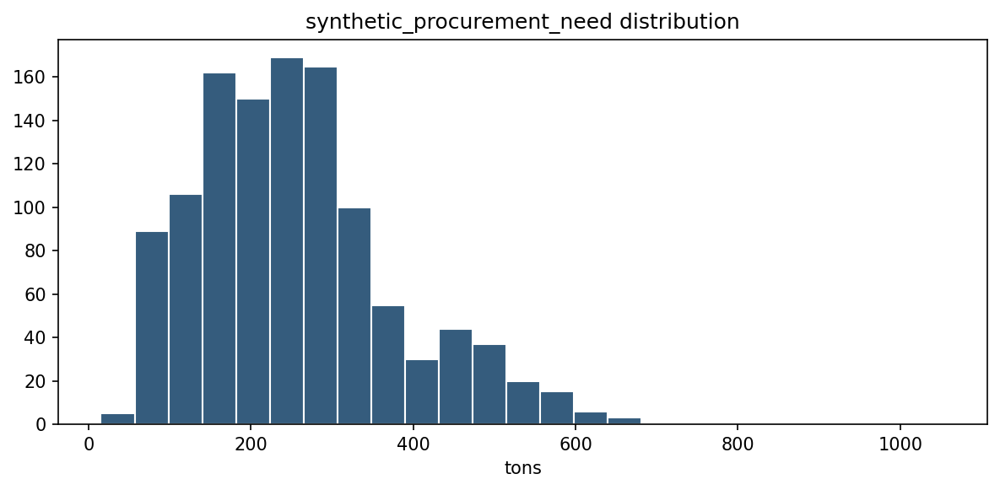
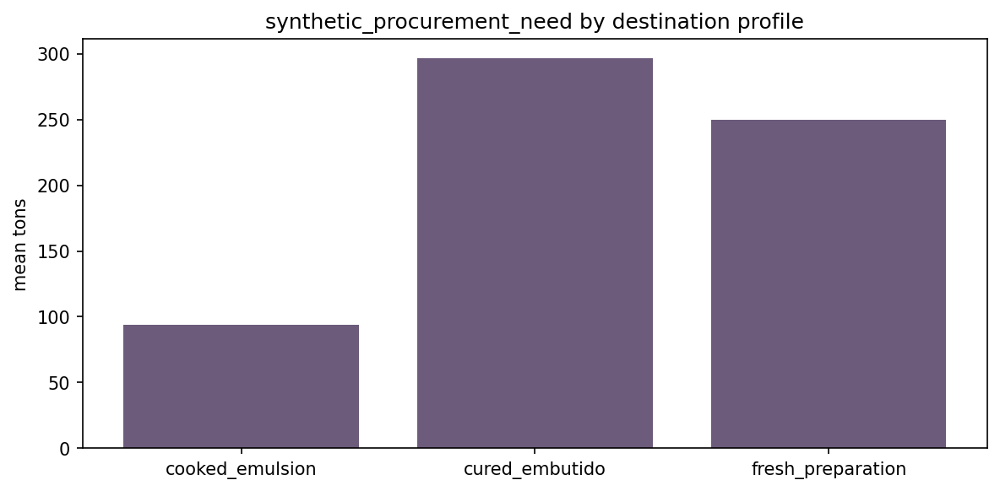
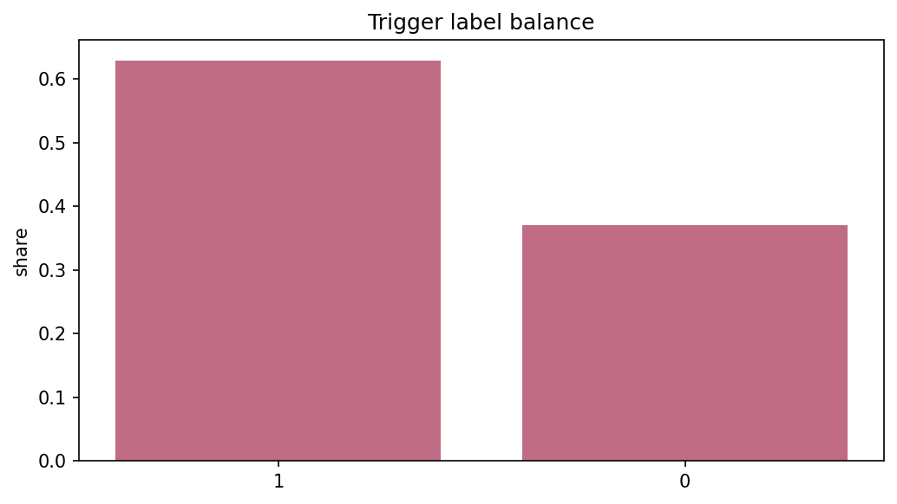
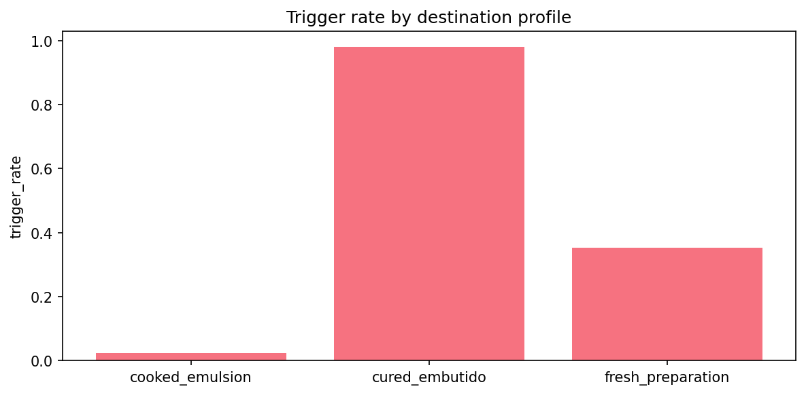
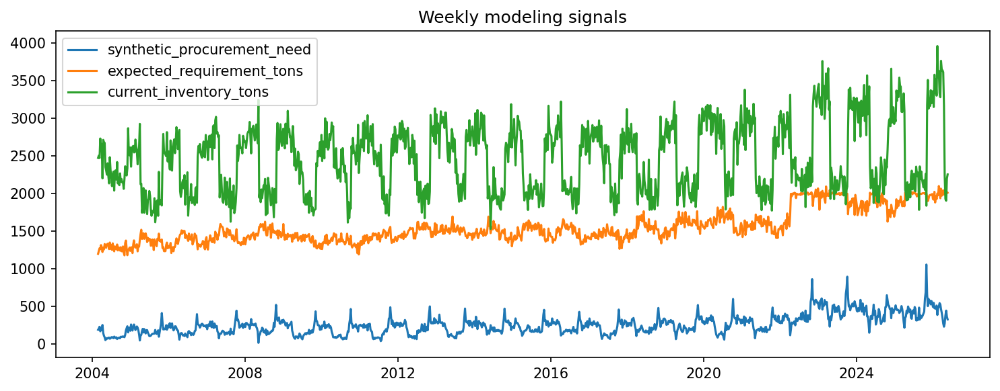
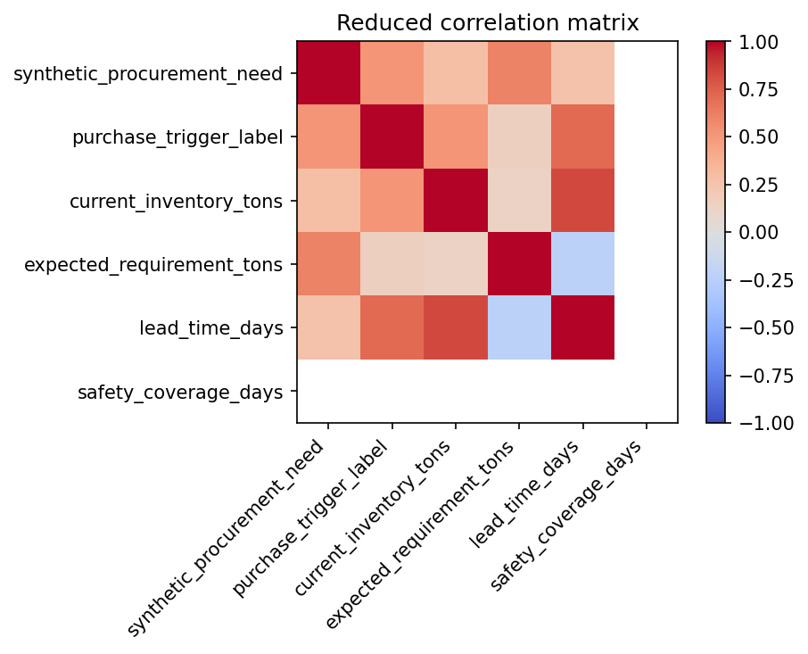

# CU28 mixed_context - Modeling Dataset EDA Notebook narrativo de auditoria para el scope `mixed_context`.
## Objetivo Realizar el EDA central del dataset final usado para entrenamiento y evaluacion, distinguiendo target upstream, trigger label y senales operativas.
## Alcance Este analisis describe la ruta oficial reproducible `mixed_context`. Las senales externas se tratan como contexto/proxy. Las variables internas de planta siguen siendo sinteticas salvo carga posterior de cliente.
## Inputs
- `data/processed/baseline/feature_engineering_modeling__mixed_context.csv`
- `data/processed/baseline/modeling_metadata__mixed_context.json`
## Outputs esperados
- `reports/tables/eda/modeling_dataset_summary__mixed_context.csv`
- `reports/tables/eda/modeling_dataset_quality__mixed_context.csv`
- `reports/tables/eda/target_by_profile__mixed_context.csv`
- `reports/tables/eda/trigger_balance__mixed_context.csv`
- `reports/figures/eda/target_distribution__mixed_context.png`
- `reports/figures/eda/target_by_profile__mixed_context.png`
- `reports/figures/eda/trigger_balance__mixed_context.png`
- `reports/figures/eda/trigger_by_profile__mixed_context.png`
- `reports/figures/eda/modeling_dataset_timeseries__mixed_context.png`
- `reports/figures/eda/modeling_dataset_correlation__mixed_context.png`
## Limitaciones Este notebook documenta evidencia reproducible del pipeline oficial, pero no sustituye la revision de codigo, la auditoria de datos de origen ni una certificacion operacional de planta.
from pathlib import Path
import json
import numpy as np
import pandas as pd
import matplotlib
matplotlib.use("Agg")
import matplotlib.pyplot as plt
from src.reproducibility.notebook_support import (
detect_temporal_columns,
ensure_eda_dirs,
execution_metadata,
first_valid_temporal_range,
load_source_manifests,
load_tabular_file,
parse_markdown_table,
print_frame,
print_series,
project_root,
read_json,
relative_to_root,
save_figure,
save_table,
sha256_file,
)
NOTEBOOK_NAME = "05_modeling_dataset_eda.ipynb"
PROJECT_ROOT = project_root()
SCOPE = globals().get("scope", "mixed_context")
REPORT_DIRS = ensure_eda_dirs()
META = execution_metadata(SCOPE)
FIGURES = []
TABLES = []
print(json.dumps(META, indent=2))
{
"scope": "mixed_context",
"executed_at_utc": "2026-06-17T10:30:08.093318+00:00",
"commit": "b2fc273adf68c17087b4637655067bc80d417fa9"
}
## Carga de datos Las siguientes celdas cargan los artefactos de entrada y muestran verificaciones intermedias antes de producir tablas y graficas.
modeling_path = PROJECT_ROOT / "data/processed/baseline/feature_engineering_modeling__mixed_context.csv"
metadata_path = PROJECT_ROOT / "data/processed/baseline/modeling_metadata__mixed_context.json"
modeling_df = pd.read_csv(modeling_path)
modeling_df["date"] = pd.to_datetime(modeling_df["date"], errors="coerce")
modeling_meta = read_json(metadata_path)
print(modeling_df.shape)
print_frame("Modeling dataset preview", modeling_df.head(10))
(1161, 141)
Modeling dataset preview
date baseline_order_quantity_tons cost_sensitivity current_inventory_tons demand_index destination_profile expected_requirement_tons expected_waste expected_waste_rate expected_yield expected_yield_rate formulation_class lead_time_days manufacturing_context_profile priority_level process_lead_time_days process_type product_family product_family_alias projected_stock_after_lead_time_tons purchase_price_index purchase_trigger_gap_tons purchase_trigger_label purchase_trigger_proba_heuristic quantity_optimizer_target_tons raw_material_id recipe_profile replenishment_gap_tons safety_coverage_days safety_stock_tons shelf_life_class shelf_life_days supply_index synthetic_inventory_coverage_days synthetic_inventory_level synthetic_lead_time_days synthetic_planned_orders synthetic_plant_capacity_utilization synthetic_plant_production_volume synthetic_procurement_need synthetic_procurement_need_coverage_gap synthetic_procurement_need_hybrid synthetic_procurement_need_pressure synthetic_procurement_need_refined synthetic_raw_material_requirement synthetic_waste_rate synthetic_yield_rate unit_purchase_cost date_year date_month date_quarter date_week_of_year synthetic_raw_material_requirement_lag_1 synthetic_raw_material_requirement_lag_2 synthetic_raw_material_requirement_lag_4 synthetic_raw_material_requirement_lag_8 synthetic_inventory_coverage_days_lag_1 synthetic_inventory_coverage_days_lag_2 synthetic_inventory_coverage_days_lag_4 synthetic_inventory_coverage_days_lag_8 synthetic_lead_time_days_lag_1 synthetic_lead_time_days_lag_2 synthetic_lead_time_days_lag_4 synthetic_lead_time_days_lag_8 synthetic_plant_capacity_utilization_lag_1 synthetic_plant_capacity_utilization_lag_2 synthetic_plant_capacity_utilization_lag_4 synthetic_plant_capacity_utilization_lag_8 synthetic_plant_production_volume_lag_1 synthetic_plant_production_volume_lag_2 synthetic_plant_production_volume_lag_4 synthetic_plant_production_volume_lag_8 synthetic_waste_rate_lag_1 synthetic_waste_rate_lag_2 synthetic_waste_rate_lag_4 synthetic_waste_rate_lag_8 synthetic_yield_rate_lag_1 synthetic_yield_rate_lag_2 synthetic_yield_rate_lag_4 synthetic_yield_rate_lag_8 demand_index_lag_1 demand_index_lag_2 demand_index_lag_4 demand_index_lag_8 supply_index_lag_1 supply_index_lag_2 supply_index_lag_4 supply_index_lag_8 synthetic_raw_material_requirement_roll_mean_4 synthetic_raw_material_requirement_roll_mean_12 synthetic_inventory_coverage_days_roll_mean_4 synthetic_inventory_coverage_days_roll_mean_12 demand_index_roll_mean_4 demand_index_roll_mean_12 supply_index_roll_mean_4 supply_index_roll_mean_12 synthetic_lead_time_days_roll_mean_4 synthetic_lead_time_days_roll_mean_12 synthetic_plant_capacity_utilization_roll_mean_4 synthetic_plant_capacity_utilization_roll_mean_12 synthetic_plant_production_volume_roll_mean_4 synthetic_plant_production_volume_roll_mean_12 synthetic_waste_rate_roll_mean_4 synthetic_waste_rate_roll_mean_12 synthetic_yield_rate_roll_mean_4 synthetic_yield_rate_roll_mean_12 demand_supply_gap demand_supply_ratio cost_sensitivity__high cost_sensitivity__low cost_sensitivity__medium destination_profile__cooked_emulsion destination_profile__cured_embutido destination_profile__fresh_preparation formulation_class__cooked_emulsion formulation_class__cured formulation_class__fresh_prepared manufacturing_context_profile__cooked_emulsion manufacturing_context_profile__cured_embutido manufacturing_context_profile__fresh_preparation priority_level__planned_campaign priority_level__service_critical priority_level__standard_service process_type__cooking_emulsification process_type__curing_maturation process_type__fresh_forming product_family__cooked_emulsion product_family__cured_embutido product_family__fresh_preparation product_family_alias__cooked_emulsion product_family_alias__cured_embutido product_family_alias__fresh_preparation raw_material_id__rm_cooked_emulsion raw_material_id__rm_cured_embutido raw_material_id__rm_fresh_preparation recipe_profile__fermented_dry_spiced recipe_profile__high_throughput_standard recipe_profile__marinated_short_run shelf_life_class__long shelf_life_class__medium shelf_life_class__short
2004-02-23 0.000000 high 2473.138263 101.614481 cured_embutido 1197.761368 0.031 0.031 0.79 0.79 cured 9 cured_embutido planned_campaign 11.0 curing_maturation cured_embutido cured_embutido 933.159361 100.0 93.493240 1 0.522751 0.000000 rm_cured_embutido fermented_dry_spiced 0.000000 6.0 1026.652601 long 28.0 NaN 14.453603 2473.138263 9 197.986349 0.570820 913.311500 189.003937 159.586527 189.654690 189.003937 189.654690 1197.761368 0.032739 0.787480 1000.0 2004 2 1 9 1322.075504 1262.378766 1289.340611 1263.812499 13.982842 14.376407 14.482825 13.693405 9.0 9.0 9.0 9.0 0.631568 0.601321 0.613918 0.609375 1010.509553 962.114112 982.269135 975.000244 0.029508 0.030377 0.031554 0.029711 0.786890 0.785295 0.785877 0.794397 101.614481 101.614481 100.000000 100.000000 NaN NaN NaN NaN 1243.703667 1230.445303 14.354530 14.068181 101.614481 100.717547 NaN NaN 9.0 9.0 0.594139 0.590022 950.621672 944.035668 0.030231 0.030804 0.787487 0.790961 NaN NaN 1.0 0.0 0.0 0.0 1.0 0.0 0.0 1.0 0.0 0.0 1.0 0.0 1.0 0.0 0.0 0.0 1.0 0.0 0.0 1.0 0.0 0.0 1.0 0.0 0.0 1.0 0.0 1.0 0.0 0.0 1.0 0.0 0.0
2004-03-01 0.000000 high 2502.765297 103.829780 cured_embutido 1236.798166 0.031 0.031 0.79 0.79 cured 9 cured_embutido planned_campaign 11.0 curing_maturation cured_embutido cured_embutido 912.596226 100.0 147.516488 1 0.534732 0.000000 rm_cured_embutido fermented_dry_spiced 0.000000 6.0 1060.112714 long 28.0 NaN 14.165090 2502.765297 9 214.163050 0.587794 940.469939 204.446720 203.995946 196.490606 204.446720 196.490606 1236.798166 0.033356 0.785771 1000.0 2004 3 1 10 1197.761368 1322.075504 1192.599028 1158.497109 14.453603 13.982842 14.605266 13.441639 9.0 9.0 9.0 9.0 0.570820 0.631568 0.572845 0.557306 913.311500 1010.509553 916.551524 891.690161 0.032739 0.029508 0.028299 0.029648 0.787480 0.786890 0.790282 0.792515 101.614481 101.614481 101.614481 100.000000 NaN NaN NaN NaN 1254.753451 1231.080589 14.244486 14.077872 102.168306 101.028771 NaN NaN 9.0 9.0 0.597876 0.589799 956.601276 943.679096 0.031495 0.031059 0.786359 0.790442 NaN NaN 1.0 0.0 0.0 0.0 1.0 0.0 0.0 1.0 0.0 0.0 1.0 0.0 1.0 0.0 0.0 0.0 1.0 0.0 0.0 1.0 0.0 0.0 1.0 0.0 0.0 1.0 0.0 1.0 0.0 0.0 1.0 0.0 0.0
2004-03-08 0.000000 high 2470.489874 103.829780 cured_embutido 1271.982287 0.031 0.031 0.79 0.79 cured 9 cured_embutido planned_campaign 11.0 curing_maturation cured_embutido cured_embutido 835.084076 100.0 255.186456 1 0.558249 0.000000 rm_cured_embutido fermented_dry_spiced 0.000000 6.0 1090.270532 long 28.0 NaN 13.595652 2470.489874 9 239.566930 0.604674 967.478195 228.698054 280.110008 198.939019 228.698054 198.939019 1271.982287 0.033113 0.785792 1000.0 2004 3 1 11 1236.798166 1197.761368 1262.378766 1173.445945 14.165090 14.453603 14.376407 14.483791 9.0 9.0 9.0 9.0 0.587794 0.570820 0.601321 0.565847 940.469939 913.311500 962.114112 905.355364 0.033356 0.032739 0.030377 0.032797 0.785771 0.787480 0.785295 0.796840 103.829780 101.614481 101.614481 100.000000 NaN NaN NaN NaN 1257.154331 1234.798926 14.049297 14.034033 102.722131 101.283408 NaN NaN 9.0 9.0 0.598714 0.591152 957.942297 945.842650 0.032179 0.031246 0.786483 0.790019 NaN NaN 1.0 0.0 0.0 0.0 1.0 0.0 0.0 1.0 0.0 0.0 1.0 0.0 1.0 0.0 0.0 0.0 1.0 0.0 0.0 1.0 0.0 0.0 1.0 0.0 0.0 1.0 0.0 1.0 0.0 0.0 1.0 0.0 0.0
2004-03-15 0.000000 high 2730.485334 103.829780 cured_embutido 1259.716722 0.031 0.031 0.79 0.79 cured 9 cured_embutido planned_campaign 11.0 curing_maturation cured_embutido cured_embutido 1110.849548 100.0 -31.092357 0 0.492802 0.000000 rm_cured_embutido fermented_dry_spiced 0.000000 6.0 1079.757191 long 28.0 NaN 15.172774 2730.485334 9 176.781096 0.603727 965.963346 168.760742 90.472596 181.540590 168.760742 181.540590 1259.716722 0.029490 0.789423 1000.0 2004 3 1 12 1271.982287 1236.798166 1322.075504 1214.096896 13.595652 14.165090 13.982842 13.093848 9.0 9.0 9.0 9.0 0.604674 0.587794 0.631568 0.587200 967.478195 940.469939 1010.509553 939.519423 0.033113 0.033356 0.029508 0.032601 0.785792 0.785771 0.786890 0.799071 103.829780 103.829780 101.614481 100.000000 NaN NaN NaN NaN 1241.564636 1236.875409 14.346780 14.128928 103.275955 101.495605 NaN NaN 9.0 9.0 0.591754 0.592200 946.805745 947.519375 0.032175 0.031099 0.787117 0.789969 NaN NaN 1.0 0.0 0.0 0.0 1.0 0.0 0.0 1.0 0.0 0.0 1.0 0.0 1.0 0.0 0.0 0.0 1.0 0.0 0.0 1.0 0.0 0.0 1.0 0.0 0.0 1.0 0.0 1.0 0.0 0.0 1.0 0.0 0.0
2004-03-22 0.000000 high 2600.288453 103.829780 cured_embutido 1314.081075 0.031 0.031 0.79 0.79 cured 9 cured_embutido planned_campaign 11.0 curing_maturation cured_embutido cured_embutido 910.755641 100.0 215.599566 1 0.547708 0.000000 rm_cured_embutido fermented_dry_spiced 0.000000 6.0 1126.355207 long 28.0 NaN 13.851519 2600.288453 9 224.196545 0.628783 1006.053167 214.025007 233.509665 190.440611 214.025007 190.440611 1314.081075 0.025521 0.785133 1000.0 2004 3 1 13 1259.716722 1271.982287 1197.761368 1289.340611 15.172774 13.595652 14.453603 14.482825 9.0 9.0 9.0 9.0 0.603727 0.604674 0.570820 0.613918 965.963346 967.478195 913.311500 982.269135 0.029490 0.033113 0.032739 0.031554 0.789423 0.785792 0.787480 0.785877 103.829780 103.829780 101.614481 100.000000 NaN NaN NaN NaN 1270.644563 1241.064457 14.196259 14.142105 103.829780 101.814754 NaN NaN 9.0 9.0 0.606244 0.593817 969.991162 950.107118 0.030370 0.030750 0.786530 0.789197 NaN NaN 1.0 0.0 0.0 0.0 1.0 0.0 0.0 1.0 0.0 0.0 1.0 0.0 1.0 0.0 0.0 0.0 1.0 0.0 0.0 1.0 0.0 0.0 1.0 0.0 0.0 1.0 0.0 1.0 0.0 0.0 1.0 0.0 0.0
2004-03-29 0.000000 high 2659.618450 103.829780 cured_embutido 1281.481081 0.031 0.031 0.79 0.79 cured 9 cured_embutido planned_campaign 11.0 curing_maturation cured_embutido cured_embutido 1011.999917 100.0 86.412439 1 0.519657 0.000000 rm_cured_embutido fermented_dry_spiced 0.000000 6.0 1098.412355 long 28.0 NaN 14.527978 2659.618450 9 195.600968 0.618443 989.508809 186.726778 151.814392 187.214379 186.726778 187.214379 1281.481081 0.027466 0.793369 1000.0 2004 3 1 14 1314.081075 1259.716722 1236.798166 1192.599028 13.851519 15.172774 14.165090 14.605266 9.0 9.0 9.0 9.0 0.628783 0.603727 0.587794 0.572845 1006.053167 965.963346 940.469939 916.551524 0.025521 0.029490 0.033356 0.028299 0.785133 0.789423 0.785771 0.790282 103.829780 103.829780 103.829780 101.614481 NaN NaN NaN NaN 1281.815292 1251.313121 14.286981 14.232633 103.829780 102.133902 NaN NaN 9.0 9.0 0.613907 0.598912 982.250879 958.258672 0.028897 0.030568 0.788429 0.789268 NaN NaN 1.0 0.0 0.0 0.0 1.0 0.0 0.0 1.0 0.0 0.0 1.0 0.0 1.0 0.0 0.0 0.0 1.0 0.0 0.0 1.0 0.0 0.0 1.0 0.0 0.0 1.0 0.0 1.0 0.0 0.0 1.0 0.0 0.0
2004-04-05 83.414016 high 2201.026941 103.697600 cured_embutido 1221.390320 0.031 0.031 0.79 0.79 cured 9 cured_embutido planned_campaign 11.0 curing_maturation cured_embutido cured_embutido 630.667958 100.0 416.238031 1 0.598108 87.875231 rm_cured_embutido fermented_dry_spiced 67.269368 6.0 1046.905989 long 28.0 NaN 12.614468 2201.026941 9 264.543463 0.580609 928.975072 252.541432 323.064408 191.759555 252.541432 191.759555 1221.390320 0.033843 0.786329 1000.0 2004 4 2 15 1281.481081 1314.081075 1271.982287 1262.378766 14.527978 13.851519 13.595652 14.376407 9.0 9.0 9.0 9.0 0.618443 0.628783 0.604674 0.601321 989.508809 1006.053167 967.478195 962.114112 0.027466 0.025521 0.033113 0.030377 0.793369 0.785133 0.785792 0.785295 103.829780 103.829780 103.829780 101.614481 NaN NaN NaN NaN 1269.167300 1255.308486 14.041685 14.076856 103.796735 102.442035 NaN NaN 9.0 9.0 0.607891 0.600142 972.625098 960.226981 0.029080 0.030656 0.788563 0.788393 NaN NaN 1.0 0.0 0.0 0.0 1.0 0.0 0.0 1.0 0.0 0.0 1.0 0.0 1.0 0.0 0.0 0.0 1.0 0.0 0.0 1.0 0.0 0.0 1.0 0.0 0.0 1.0 0.0 1.0 0.0 0.0 1.0 0.0 0.0
2004-04-12 0.000000 high 2712.155422 103.697600 cured_embutido 1280.050167 0.031 0.031 0.79 0.79 cured 9 cured_embutido planned_campaign 11.0 curing_maturation cured_embutido cured_embutido 1066.376636 100.0 30.809222 1 0.507020 0.000000 rm_cured_embutido fermented_dry_spiced 0.000000 6.0 1097.185857 long 28.0 NaN 14.831519 2712.155422 9 152.377445 0.622226 995.561724 145.464256 0.000000 149.944884 145.464256 149.944884 1280.050167 0.030197 0.801238 1000.0 2004 4 2 16 1221.390320 1281.481081 1259.716722 1322.075504 12.614468 14.527978 15.172774 13.982842 9.0 9.0 9.0 9.0 0.580609 0.618443 0.603727 0.631568 928.975072 989.508809 965.963346 1010.509553 0.033843 0.027466 0.029490 0.029508 0.786329 0.793369 0.789423 0.786890 103.697600 103.829780 103.829780 101.614481 NaN NaN NaN NaN 1274.250661 1260.804591 13.956371 14.221662 103.763690 102.750169 NaN NaN 9.0 9.0 0.612515 0.603061 980.024693 964.897173 0.029257 0.030455 0.791517 0.788573 NaN NaN 1.0 0.0 0.0 0.0 1.0 0.0 0.0 1.0 0.0 0.0 1.0 0.0 1.0 0.0 0.0 0.0 1.0 0.0 0.0 1.0 0.0 0.0 1.0 0.0 0.0 1.0 0.0 1.0 0.0 0.0 1.0 0.0 0.0
2004-04-19 0.000000 high 2683.229898 103.697600 cured_embutido 1256.622867 0.031 0.031 0.79 0.79 cured 9 cured_embutido planned_campaign 11.0 curing_maturation cured_embutido cured_embutido 1067.571926 100.0 9.533389 1 0.502213 0.000000 rm_cured_embutido fermented_dry_spiced 0.000000 6.0 1077.105315 long 28.0 NaN 14.946894 2683.229898 9 115.309245 0.601302 962.083127 110.077798 0.000000 105.901435 110.077798 105.901435 1256.622867 0.029499 0.788194 1000.0 2004 4 2 17 1280.050167 1221.390320 1314.081075 1197.761368 14.831519 12.614468 13.851519 14.453603 9.0 9.0 9.0 9.0 0.622226 0.580609 0.628783 0.570820 995.561724 928.975072 1006.053167 913.311500 0.030197 0.033843 0.025521 0.032739 0.801238 0.786329 0.785133 0.787480 103.697600 103.697600 103.829780 101.614481 NaN NaN NaN NaN 1259.886109 1258.078113 14.230215 14.260334 103.730645 103.058302 NaN NaN 9.0 9.0 0.605645 0.602009 969.032183 963.215006 0.030251 0.030284 0.792283 0.788766 NaN NaN 1.0 0.0 0.0 0.0 1.0 0.0 0.0 1.0 0.0 0.0 1.0 0.0 1.0 0.0 0.0 0.0 1.0 0.0 0.0 1.0 0.0 0.0 1.0 0.0 0.0 1.0 0.0 1.0 0.0 0.0 1.0 0.0 0.0
2004-04-26 0.000000 high 2671.382773 103.697600 cured_embutido 1327.768741 0.031 0.031 0.79 0.79 cured 9 cured_embutido planned_campaign 11.0 curing_maturation cured_embutido cured_embutido 964.251535 100.0 173.835957 1 0.538112 0.000000 rm_cured_embutido fermented_dry_spiced 0.000000 6.0 1138.087492 long 28.0 NaN 14.083536 2671.382773 9 91.949460 0.634085 1014.536101 87.777819 0.000000 32.810722 87.777819 32.810722 1327.768741 0.034285 0.790288 1000.0 2004 4 2 18 1256.622867 1280.050167 1281.481081 1236.798166 14.946894 14.831519 14.527978 14.165090 9.0 9.0 9.0 9.0 0.601302 0.622226 0.618443 0.587794 962.083127 995.561724 989.508809 940.469939 0.029499 0.030197 0.027466 0.033356 0.788194 0.801238 0.793369 0.785771 103.697600 103.697600 103.829780 103.829780 NaN NaN NaN NaN 1271.458024 1269.342255 14.119104 14.216857 103.697600 103.231895 NaN NaN 9.0 9.0 0.609556 0.607113 975.289006 971.380387 0.031956 0.030783 0.791512 0.788767 NaN NaN 1.0 0.0 0.0 0.0 1.0 0.0 0.0 1.0 0.0 0.0 1.0 0.0 1.0 0.0 0.0 0.0 1.0 0.0 0.0 1.0 0.0 0.0 1.0 0.0 0.0 1.0 0.0 1.0 0.0 0.0 1.0 0.0 0.0
dataset_summary = pd.DataFrame(
[
{
"rows": len(modeling_df),
"columns": len(modeling_df.columns),
"date_min": str(modeling_df["date"].min().date()),
"date_max": str(modeling_df["date"].max().date()),
"granularity": "weekly",
"destination_profiles": int(modeling_df["destination_profile"].nunique()),
}
]
)
column_summary = pd.DataFrame({"column": modeling_df.columns})
print_frame("Dataset summary", dataset_summary)
print_frame("Column summary", column_summary, rows=30)
Dataset summary
rows columns date_min date_max granularity destination_profiles
1161 141 2004-02-23 2026-05-18 weekly 3
Column summary
column
date
baseline_order_quantity_tons
cost_sensitivity
current_inventory_tons
demand_index
destination_profile
expected_requirement_tons
expected_waste
expected_waste_rate
expected_yield
expected_yield_rate
formulation_class
lead_time_days
manufacturing_context_profile
priority_level
process_lead_time_days
process_type
product_family
product_family_alias
projected_stock_after_lead_time_tons
purchase_price_index
purchase_trigger_gap_tons
purchase_trigger_label
purchase_trigger_proba_heuristic
quantity_optimizer_target_tons
raw_material_id
recipe_profile
replenishment_gap_tons
safety_coverage_days
safety_stock_tons
## Calidad de datos Se revisan nulos, duplicados, columnas constantes y outliers basicos antes de interpretar el target upstream y la etiqueta trigger.
null_summary = modeling_df.isna().mean().reset_index()
null_summary.columns = ["column", "missing_pct"]
duplicate_count = int(modeling_df.duplicated().sum())
constant_columns = [column for column in modeling_df.columns if modeling_df[column].nunique(dropna=False) <= 1]
quality_summary = pd.DataFrame(
[
{"metric": "duplicate_rows", "value": duplicate_count},
{"metric": "constant_columns", "value": len(constant_columns)},
]
)
print_frame("Null summary", null_summary.sort_values("missing_pct", ascending=False).head(20))
print_frame("Quality summary", quality_summary)
Null summary
column missing_pct
supply_index_lag_8 0.764858
supply_index_lag_4 0.761413
supply_index_lag_2 0.759690
supply_index_lag_1 0.758829
supply_index 0.757967
demand_supply_ratio 0.757967
demand_supply_gap 0.757967
supply_index_roll_mean_12 0.757967
supply_index_roll_mean_4 0.757967
baseline_order_quantity_tons 0.000000
Quality summary
metric value
duplicate_rows 0
constant_columns 3
outlier_rows = []
for column in ["synthetic_procurement_need", "current_inventory_tons", "expected_requirement_tons"]:
q1 = modeling_df[column].quantile(0.25)
q3 = modeling_df[column].quantile(0.75)
iqr = q3 - q1
upper = q3 + 1.5 * iqr
lower = q1 - 1.5 * iqr
outlier_rows.append(
{
"column": column,
"lower_bound": lower,
"upper_bound": upper,
"outlier_rows": int(((modeling_df[column] < lower) | (modeling_df[column] > upper)).sum()),
}
)
outlier_df = pd.DataFrame(outlier_rows)
print_frame("Basic outlier audit", outlier_df)
display(outlier_df)
Basic outlier audit
column lower_bound upper_bound outlier_rows
synthetic_procurement_need -56.865477 539.566548 36
current_inventory_tons 980.651079 3883.484814 1
expected_requirement_tons 1069.195364 1960.106036 134
| column | lower_bound | upper_bound | outlier_rows |
|---|---|---|---|
| synthetic_procurement_need | -56.865477 | 539.566548 | 36 |
| current_inventory_tons | 980.651079 | 3883.484814 | 1 |
| expected_requirement_tons | 1069.195364 | 1960.106036 | 134 |
target_distribution = modeling_df["synthetic_procurement_need"].describe().reset_index()
target_distribution.columns = ["metric", "value"]
target_by_profile = modeling_df.groupby("destination_profile")["synthetic_procurement_need"].agg(["count", "mean", "median", "min", "max"]).reset_index()
print_frame("Target distribution", target_distribution, rows=20)
print_frame("Target by profile", target_by_profile, rows=20)
Target distribution
metric value
count 1161.000000
mean 256.789110
std 127.613556
min 15.021012
25% 166.796532
50% 242.165203
75% 315.904539
max 1055.525357
Target by profile
destination_profile count mean median min max
cooked_emulsion 120 93.772185 89.101506 37.883663 211.116095
cured_embutido 574 296.680747 275.616794 15.021012 658.094151
fresh_preparation 467 249.646137 191.444314 90.291432 1055.525357
trigger_balance = modeling_df["purchase_trigger_label"].value_counts(normalize=True).reset_index()
trigger_balance.columns = ["purchase_trigger_label", "share"]
trigger_by_profile = modeling_df.groupby("destination_profile")["purchase_trigger_label"].mean().reset_index()
print_frame("Trigger balance", trigger_balance, rows=20)
print_frame("Trigger by profile", trigger_by_profile, rows=20)
Trigger balance
purchase_trigger_label share
1 0.62963
0 0.37037
Trigger by profile
destination_profile purchase_trigger_label
cooked_emulsion 0.025000
cured_embutido 0.980836
fresh_preparation 0.353319
trigger_vs_inventory = modeling_df.groupby(pd.cut(modeling_df["current_inventory_tons"], bins=10))["purchase_trigger_label"].mean().reset_index()
trigger_vs_requirement = modeling_df.groupby(pd.cut(modeling_df["expected_requirement_tons"], bins=10))["purchase_trigger_label"].mean().reset_index()
print_frame("Trigger vs inventory bins", trigger_vs_inventory, rows=20)
print_frame("Trigger vs requirement bins", trigger_vs_requirement, rows=20)
Trigger vs inventory bins
current_inventory_tons purchase_trigger_label
(1526.963, 1772.294] 0.612903
(1772.294, 2015.195] 0.313131
(2015.195, 2258.097] 0.327354
(2258.097, 2500.998] 0.416667
(2500.998, 2743.9] 0.840000
(2743.9, 2986.801] 0.935323
(2986.801, 3229.703] 0.946809
(3229.703, 3472.604] 0.975000
(3472.604, 3715.506] 1.000000
(3715.506, 3958.407] 1.000000
Trigger vs requirement bins
expected_requirement_tons purchase_trigger_label
(1176.964, 1269.978] 0.575000
(1269.978, 1362.072] 0.688406
(1362.072, 1454.165] 0.675000
(1454.165, 1546.259] 0.520913
(1546.259, 1638.352] 0.400000
(1638.352, 1730.446] 0.542373
(1730.446, 1822.539] 0.612903
(1822.539, 1914.633] 0.888889
(1914.633, 2006.727] 0.910569
(2006.727, 2098.82] 0.903226
## Graficas Las graficas siguientes muestran comportamiento del target upstream, balance trigger y senales temporales semanales.
fig, ax = plt.subplots(figsize=(8, 4))
ax.hist(modeling_df["synthetic_procurement_need"], bins=25, color="#355c7d", edgecolor="white")
ax.set_title("synthetic_procurement_need distribution")
ax.set_xlabel("tons")
FIGURES.append(save_figure(fig, "target_distribution__mixed_context.png"))
plt.close(fig)
Figure saved to: C:\Users\Erick Mercado\Documents\a28-cnp-carnico-neuroevolutivas-materia\reports\figures\eda\target_distribution__mixed_context.png

fig, ax = plt.subplots(figsize=(8, 4))
ax.bar(target_by_profile["destination_profile"], target_by_profile["mean"], color="#6c5b7b")
ax.set_title("synthetic_procurement_need by destination profile")
ax.set_ylabel("mean tons")
FIGURES.append(save_figure(fig, "target_by_profile__mixed_context.png"))
plt.close(fig)
Figure saved to: C:\Users\Erick Mercado\Documents\a28-cnp-carnico-neuroevolutivas-materia\reports\figures\eda\target_by_profile__mixed_context.png

fig, ax = plt.subplots(figsize=(7, 4))
ax.bar(trigger_balance["purchase_trigger_label"].astype(str), trigger_balance["share"], color="#c06c84")
ax.set_title("Trigger label balance")
ax.set_ylabel("share")
FIGURES.append(save_figure(fig, "trigger_balance__mixed_context.png"))
plt.close(fig)
Figure saved to: C:\Users\Erick Mercado\Documents\a28-cnp-carnico-neuroevolutivas-materia\reports\figures\eda\trigger_balance__mixed_context.png

fig, ax = plt.subplots(figsize=(8, 4))
ax.bar(trigger_by_profile["destination_profile"], trigger_by_profile["purchase_trigger_label"], color="#f67280")
ax.set_title("Trigger rate by destination profile")
ax.set_ylabel("trigger_rate")
FIGURES.append(save_figure(fig, "trigger_by_profile__mixed_context.png"))
plt.close(fig)
Figure saved to: C:\Users\Erick Mercado\Documents\a28-cnp-carnico-neuroevolutivas-materia\reports\figures\eda\trigger_by_profile__mixed_context.png

weekly_signals = modeling_df.groupby("date")[["synthetic_procurement_need", "current_inventory_tons", "expected_requirement_tons"]].mean().reset_index()
fig, ax = plt.subplots(figsize=(10, 4))
ax.plot(weekly_signals["date"], weekly_signals["synthetic_procurement_need"], label="synthetic_procurement_need")
ax.plot(weekly_signals["date"], weekly_signals["expected_requirement_tons"], label="expected_requirement_tons")
ax.plot(weekly_signals["date"], weekly_signals["current_inventory_tons"], label="current_inventory_tons")
ax.set_title("Weekly modeling signals")
ax.legend()
FIGURES.append(save_figure(fig, "modeling_dataset_timeseries__mixed_context.png"))
plt.close(fig)
Figure saved to: C:\Users\Erick Mercado\Documents\a28-cnp-carnico-neuroevolutivas-materia\reports\figures\eda\modeling_dataset_timeseries__mixed_context.png

corr_columns = [
"synthetic_procurement_need",
"purchase_trigger_label",
"current_inventory_tons",
"expected_requirement_tons",
"lead_time_days",
"safety_coverage_days",
]
corr = modeling_df[corr_columns].corr(numeric_only=True)
fig, ax = plt.subplots(figsize=(7, 5))
image = ax.imshow(corr.values, cmap="coolwarm", vmin=-1, vmax=1)
ax.set_xticks(range(len(corr.columns)))
ax.set_yticks(range(len(corr.index)))
ax.set_xticklabels(corr.columns, rotation=45, ha="right")
ax.set_yticklabels(corr.index)
ax.set_title("Reduced correlation matrix")
fig.colorbar(image, ax=ax, fraction=0.046, pad=0.04)
FIGURES.append(save_figure(fig, "modeling_dataset_correlation__mixed_context.png"))
plt.close(fig)
Figure saved to: C:\Users\Erick Mercado\Documents\a28-cnp-carnico-neuroevolutivas-materia\reports\figures\eda\modeling_dataset_correlation__mixed_context.png

## Interpretacion La granularidad semanal permite combinar proxies externos con una capa sintetica de planta sin pretender que el dataset sea un historico observado de compras. `synthetic_procurement_need` sigue siendo el target upstream y no la cantidad final recomendada.
TABLES.append(save_table(dataset_summary, "modeling_dataset_summary__mixed_context.csv"))
TABLES.append(save_table(outlier_df, "modeling_dataset_quality__mixed_context.csv"))
TABLES.append(save_table(target_by_profile, "target_by_profile__mixed_context.csv"))
TABLES.append(save_table(trigger_balance, "trigger_balance__mixed_context.csv"))
RESULT = {
"notebook": NOTEBOOK_NAME,
"tables": TABLES,
"figures": FIGURES,
"findings": [
"The modeling dataset is weekly and combines proxy, synthetic and derived variables.",
"synthetic_procurement_need varies materially by destination profile and supports upstream modeling.",
"purchase_trigger_label tracks operational stress through inventory, requirement and lead-time relationships.",
],
"limitations": [
"The dataset remains mixed and derived; it should not be read as an observed purchase ledger.",
],
}
print(json.dumps(RESULT, indent=2))
Table saved to: C:\Users\Erick Mercado\Documents\a28-cnp-carnico-neuroevolutivas-materia\reports\tables\eda\modeling_dataset_summary__mixed_context.csv
Table saved to: C:\Users\Erick Mercado\Documents\a28-cnp-carnico-neuroevolutivas-materia\reports\tables\eda\modeling_dataset_quality__mixed_context.csv
Table saved to: C:\Users\Erick Mercado\Documents\a28-cnp-carnico-neuroevolutivas-materia\reports\tables\eda\target_by_profile__mixed_context.csv
Table saved to: C:\Users\Erick Mercado\Documents\a28-cnp-carnico-neuroevolutivas-materia\reports\tables\eda\trigger_balance__mixed_context.csv
{
"notebook": "05_modeling_dataset_eda.ipynb",
"tables": [
"reports/tables/eda/modeling_dataset_summary__mixed_context.csv",
"reports/tables/eda/modeling_dataset_quality__mixed_context.csv",
"reports/tables/eda/target_by_profile__mixed_context.csv",
"reports/tables/eda/trigger_balance__mixed_context.csv"
],
"figures": [
"reports/figures/eda/target_distribution__mixed_context.png",
"reports/figures/eda/target_by_profile__mixed_context.png",
"reports/figures/eda/trigger_balance__mixed_context.png",
"reports/figures/eda/trigger_by_profile__mixed_context.png",
"reports/figures/eda/modeling_dataset_timeseries__mixed_context.png",
"reports/figures/eda/modeling_dataset_correlation__mixed_context.png"
],
"findings": [
"The modeling dataset is weekly and combines proxy, synthetic and derived variables.",
"synthetic_procurement_need varies materially by destination profile and supports upstream modeling.",
"purchase_trigger_label tracks operational stress through inventory, requirement and lead-time relationships."
],
"limitations": [
"The dataset remains mixed and derived; it should not be read as an observed purchase ledger."
]
}
| rows | columns | date_min | date_max | granularity | destination_profiles |
|---|---|---|---|---|---|
| 1161 | 141 | 2004-02-23 | 2026-05-18 | weekly | 3 |
| column | lower_bound | upper_bound | outlier_rows |
|---|---|---|---|
| synthetic_procurement_need | -56.865477 | 539.566548 | 36 |
| current_inventory_tons | 980.651079 | 3883.484814 | 1 |
| expected_requirement_tons | 1069.195364 | 1960.106036 | 134 |
| destination_profile | count | mean | median | min | max |
|---|---|---|---|---|---|
| cooked_emulsion | 120 | 93.772185 | 89.101506 | 37.883663 | 211.116095 |
| cured_embutido | 574 | 296.680747 | 275.616794 | 15.021012 | 658.094151 |
| fresh_preparation | 467 | 249.646137 | 191.444314 | 90.291432 | 1055.525357 |
| purchase_trigger_label | share |
|---|---|
| 1 | 0.62963 |
| 0 | 0.37037 |
## Limitaciones La calidad del dataset final depende de decisiones de simulacion y armonizacion semanal. El objetivo del notebook es hacer visibles esas decisiones y sus efectos estadisticos basicos.
## Concluson final Este es el EDA central del dataset modelable: resume cobertura temporal, calidad, dispersion por perfil y comportamiento conjunto de target upstream y trigger.